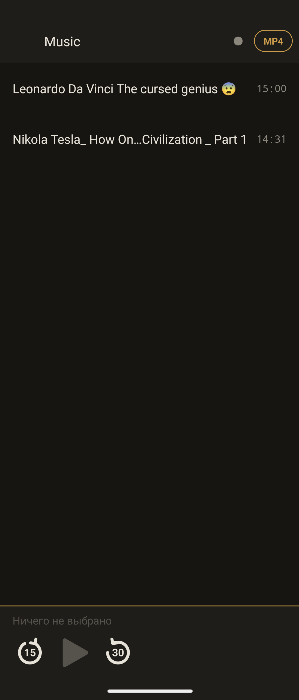

A player for long recordings from a single folder.
Two-hour lectures, audiobooks, recorded talks. It opens a folder, not a library — and it remembers where you stopped in every file.
No permissions beyond the folder you grant yourself. No internet, no accounts, no ads, no tracking.

The idea
Most players want to be catalogues. They scan your storage, build a database, sort by artist and album, and show you a wall of cover art. That is a fine thing for music and a poor thing for a two-hour lecture with no tags at all.
Hark does the opposite. It reads one folder in a single query, shows the files as they lie on disk, and plays them in order. There is no library, no index, no scan. What you put in the folder is what you see.
How it thinks
On a 1080-pixel screen, two hours means one pixel is roughly seven seconds. Precise seeking by drag is physically impossible, so there are three levels of access instead: fifteen- and thirty-second buttons, coarse dragging across the full height of the panel, and exact time entry on a long press of the digits.
Opening metadata for three hundred files at once is several seconds of frozen screen. Hark reads each duration as its row is drawn, in the background, and caches it. Sorting by length therefore settles a second after the folder opens — the known files first, the rest arriving.
Some devices return application/octet-stream instead of an honest audio type. A filter trusting MIME alone would swallow half the folder, so both the extension and the type are checked, and either one is enough.
Pulling the jack does not stop playback — the system simply moves the sound to the speaker, and your lecture continues out loud on the bus. Hark listens for the system notice and pauses itself. Resuming is manual: headphones plugged back in should not start the sound.
On some devices setting playback speed on a paused player silently resumes it. Hark records the state before the change and restores it after, and writes the incident into the inquest log.
A file deleted while the app slept would leave a dead "Continue" row. Before drawing it, Hark checks that the file is still there, and quietly forgets it if not. A file deleted during playback keeps playing to the end — the descriptor is still open.
The screen
Tapping the bottom panel expands it: speed on the left, sleep timer on the right, fifteen and thirty second jumps around the play button. The large digits are the position; a long press on them opens exact entry by hours, minutes and seconds — the only honest way into the middle of a two-hour recording. Dragging the bar raises a large plate above your finger showing where you are heading.
Speed and the sleep timer are mirrored on the main screen, flanking the transport buttons, so the common case needs no expanding at all.
A stripe under a file name shows how far in you stopped. Finished files dim to a quieter grey. The file currently playing gets a thin vertical rule on its left edge, not a filled highlight: a block shouts, a rule speaks.
The palette is one accent and three greys. Amber, the colour of a valve indicator — it does not burn in the dark and it separates Hark from the blue of every other player. No more than three elements carry the accent at once; a fourth would stop it being an accent.
The background is not black but warm graphite, and the text is not white but bone. Pure black against pure white draws a hard edge that hurts at night.
On the home screen
File name, folder, position bar, times, and five buttons: previous, back fifteen, play, forward thirty, next. Speed sits on the right and cycles on a tap without opening anything. Tapping the name or the background opens Hark on the folder you were in.
Cover art holds the right edge. Artwork embedded in the file comes first; failing that, an image lying in the same folder, where cover, folder, front and album outrank a stray screenshot. The second path matters more: a book cut into forty chapters usually carries no tags at all, yet the cover sits right there as a file. With neither, the square disappears and the rest takes its place.
The buttons work even when Android has evicted the app from memory: the player raises itself, reads the last file and position from storage, and carries on from the same second.
Fill and frame are separate layers. The fill dials down through five steps to nothing at all, leaving only a thin rounded outline with the wallpaper showing through — while the frame always stays. Without it the contents read as scattered across the desktop rather than as one object.
Navigation
One line holds everything used constantly: back arrow, folder name, the MP4 filter, and a star for bookmarks. Everything needed occasionally lives behind the logo — sorting, history, folder picker, settings, help. Five elements, no more.
Bookmarks hold up to twenty favourite folders, and each remembers the volume it sits on — a folder on a memory card is bookmarked alongside internal storage, and Hark switches trees on the way. The star glows amber when the current folder is already saved. For someone keeping lectures in one folder and audiobooks in another, this is the whole navigation model.
Small things that took the longest
Pausing breaks a sentence in half, so resuming from the exact millisecond gives you nothing. Playback steps back three and a half seconds by default — adjustable, or off. It is one line of code and the single change that most altered how the app feels.
When sound leaves for a headset, a mark appears in the header and in the widget: amber for Bluetooth, grey for a cable, with the charge beside it. Android does not expose that charge publicly — the method is hidden and Hark reaches it sideways, while some headsets never report it at all. Then the mark stands alone, which is the honest limit rather than a fault.
A crash used to take its own explanation with it. Now the stack of the last one is written to a file, survives the death of the process, and is waiting in the inquest on the next launch.
Languages
Arabic, Hebrew and Urdu lay out right to left. Auto is not a fifteenth language but the default: the app follows the system and falls back to English for anything it does not know.
Built
Every line of this application was generated by AI — Claude Opus 5 — through plain conversation. Not a single line was written by a human hand. The owner of the repository described what he wanted, tested each build on a phone, and reported what broke.
The toolchain is deliberately bare: javac against a platform stub, dx for dex, aapt for resources, zipalign and apksigner to close it. No IDE, no build system, no dependencies at all — not one external library. The interface is built in code; there is not a single layout XML in the project.
aapt package -f -m -J gen -M AndroidManifest.xml -S res -I android.jar -F base.ap_ javac -encoding UTF-8 --release 8 -classpath android.jar -d cls $(find src gen -name "*.java") dx --dex --min-sdk-version=26 --output=classes.dex cls zip base.ap_ classes.dex && zipalign -f 4 base.ap_ aligned.apk apksigner sign --ks shumtugle.keystore --out hark-2.9.7.apk aligned.apk
One honest scar worth recording: the first build crashed instantly. dx is old enough to leave invoke-custom instructions in the bytecode, asking the runtime for LambdaMetafactory — a class Android does not have. Modern tooling always desugars lambdas for exactly this reason. All forty-seven of them were rewritten as anonymous classes by hand.
Access
Hark asks for one thing: the folder, chosen by you, once, through the system picker. Nothing else is readable to it. It has no internet permission at all, so it cannot phone home even if it wanted to.
The remaining permissions are the mechanics of playing sound: a foreground service so the audio survives leaving the app, a notification to control it, and a wake lock while sound is actually running.
No accounts. No analytics. No advertising identifiers. Nothing is uploaded, because there is nowhere for it to go.